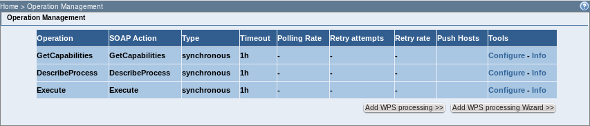
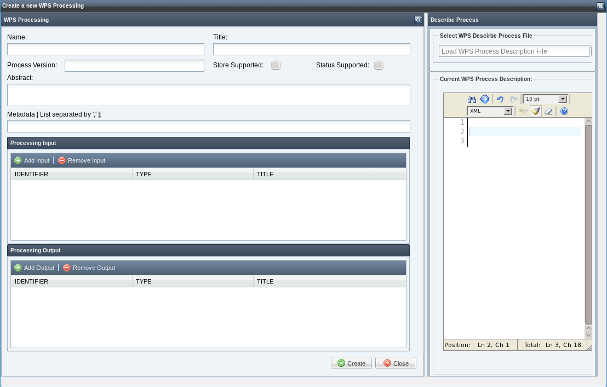
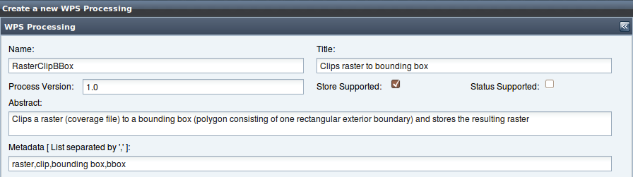
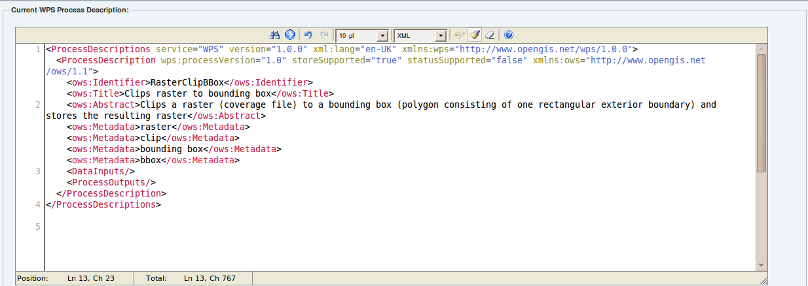

A new WPS Processing can be added to a service in order to grow its computing power.
Select a WPS service and click on the Operations management menu link. A page reporting the operations available for the selected service should be displayed.

To add new processing click on the "Add WPS processing Wizard" button. The browser should display the following dialog:

In this step a Describe Process document can be created. The DescribeProcess operation allows WPS clients to request a full description of one or more processes that can be executed by the service. This description includes the input and output parameters and formats and can be used to automatically build a user interface to capture the parameter values to be used to execute a process. In tho Toolbox the describe document is used to build the WPS infrastructure and set the variables that will be used in the processing. Read here for additional information on how to build a Describe Process document.
The wizard window is split into two sections. The left section contains the wizard for the creation of document. The right section contains an edit area with the document that is being created. Also, the edit area section can be used to edit the Describe Process document or to load a previously saved.
At the top of the wizard should be inserted the general information of the "WPS processing". These are:

After set the information like the previous figure on the right of the interface, the XML Document will be as follows:

See the "Processing Input" section.
See the "Processing Output" section.
When done, click on the "Create” button.
In order to complete the creation of the WPS processing see the "Add a WPS processing" section.